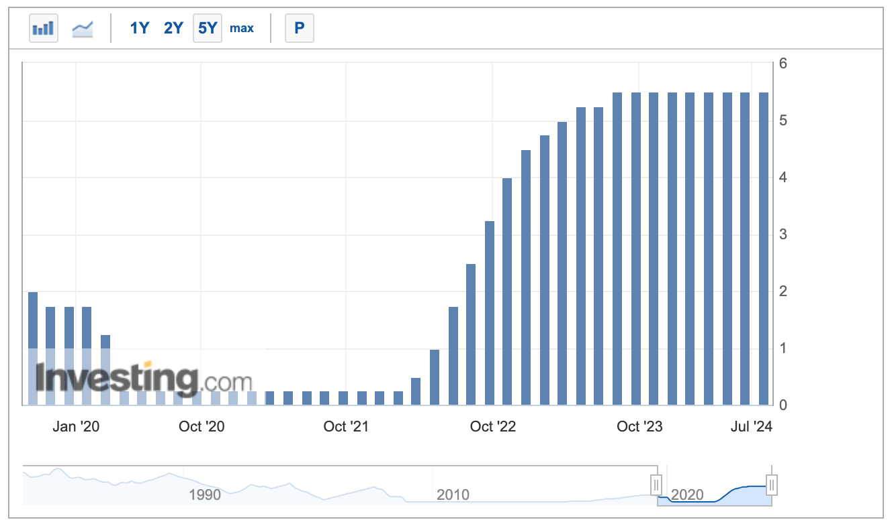

미 연준 7월 FOMC에서 기준금리 5.50%로 동결 결정
연준은 미국 시각 7월 31일 FOMC를 통해 미국의 기준금리를 종전과 동일한 5.25% ~ 5.50%로 동결 결정했다.
 연준 기준금리 추이
2023년 7월 마지막으로 금리가 오른 이후 8회 연속 동결이다. 기준금리 자체는 만장일치로 동결 의견이 모인 모양이다.
일부 유력 매체 등에서는 7월 인하가 주장되거나 예측되기도 했고, 회의 전날에 발표된 고용 지표들이 모두 둔화세를 보이면서 인하 가능성이 올라가는 듯했지만, 그래도 대다수가 예상한 대로의 결과였다.
파월은 성명 및 인터뷰를 통해 고용 둔화에 대해 인정하지만 실업률이 아직은 위험하진 않은 수준으로 판단하는 것 같고 물가 추세에 대해서도 아직은 자신이 없다는 듯한 입장을 보이며 동결 이유를 설명했다.
다만 이번 회의에서 금리 인하에 대한 논의가 오갔다는 것이 알려졌다. 그리고 9월 인하 가능성을 열어두는 발언도 이어졌다. 아마도 물가와 고용 지표가 현 추세에서 벗어나지만 않는다면 9월에는 인하할 것이라는 의미로 읽혀진다.
결론: 연준은 선제적 조치 보다는 확실한 조치를 선호하는 것 같다.
여담
이번 동결에 대해 주식시장에선 긍정적인 반응인 것 같다. 그야 주식시장에선 예상대로 움직이는 것을 선호할 테니 말이다. 만약 갑작스런 금리 인하가 있었다면 오히려 침체 위기설을 부풀리게 될 위험성이 있기도 하다. 다행이라고 생각할까? 물론 9월에도 예상대로 움직여 준다면 다행일 거다.
확률은 적겠지만 9월 FOMC 이전에 경기가 갑자기 확 꺾이면 오히려 연준 책임론이 불거지고 트럼프의 화살이 집중적으로 날아드는 무서운 광경을 목격할 수 있을 것 같다. 반대로 오히려 경기가 좋아지면 또 트럼프는 신나서 "금리 놔둬라"고 협박하는 끔찍한 광경을 목격할 수 있을 지도 모르겠다. 그럼 연준의 예측대로 되면... 그래도 트럼프는 "대선 전까진 금리 놔둬라"고 공격할 게 뻔하다. 사실 트럼프는 뭐가 어떻게 되든 연준을 공격할 거다. 파월이 그저 안쓰럽다.
그러니 내가 파월이라면 9월에는 뭐가 어떻게 되든 금리 인하를 할 거다. 적장에 침이라도 뱉고 죽어야지 안 그러면 억울해서 어떻게 눈을 감을 수... 아 아니다 안 죽는 게 최고다.